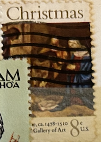
| SOURCE | TITLE| IMAGE MATCH | click to source page |
| www.ebay.com | STAMP US SCOTT 1444 "Christmas-Giorgione" 8 CENT 1977 MH PB ... | 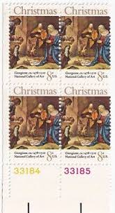 |
| www.ebay.com | STAMP US SCOTT 1444 "Adoration of the Shepherds" 8 CENT 1977 ... | 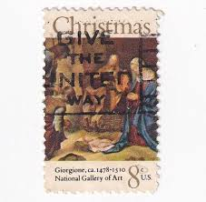 |
| www.etsy.com | 10 Giorgione Christmas Stamps, Vintage Unused USPS 8 Cent ... | 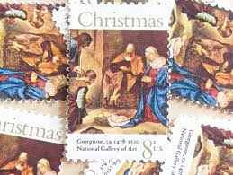 |
| www.etsy.com | 1971 8c Christmas Adoration of the Shepherds by Giorgione ... | 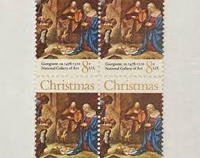 |
| www.mysticstamp.com | 1444 - 1971 8c Adoration of the Shepherds - Mystic Stamp Company | 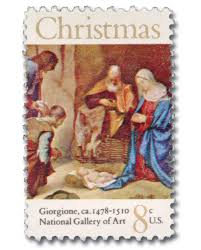 |
| www.hipstamp.com | US #1444 8c Christmas - Adoration of the Shepherds | United ... | 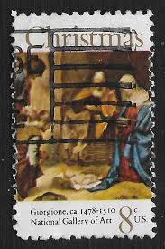 |
| www.ebay.com | Block of 4 stamps - Scott 1444 - 8 cent - Christmas - 1971 ... | 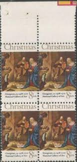 |
| www.amazon.com | Amazon.com: Christmas 8 Cent U.S. Postage Stamps; Block of 4 ... | 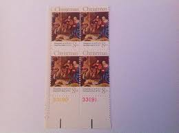 |
| www.shutterstock.com | Singapore April 13 2022 Stamp Printed Stock Photo ... | 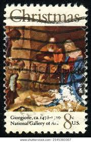 |
| www.magnoliapostage.com | 10 x 8-cent Christmas Manger Scene - National Gallery of Art ... | 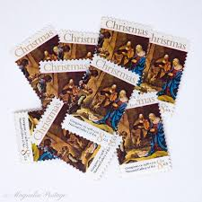 |
| www.dreamstime.com | A Vintage Christmas Postage Stamp from the USA. Editorial ... | 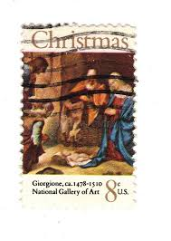 |
| vegas-stamps-hobbies.com | 1971 Christmas Nativity Giorgione Painting Block Of 4 8c ... | 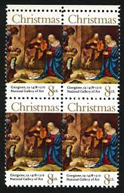 |
| www.ebid.net | US Stamp #1444 used: 1971 8c Christmas - Giorgione ... | 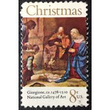 |
| www.mysticstamp.com | 1414/1799 - 1970s Traditional Christmas, Collection of 10 ... | 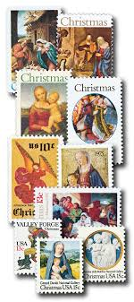 |
| www.ebid.net | US Stamp #1444 mint: 8c 1971 Christmas, Adoration of ... | 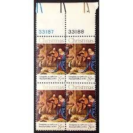 |
| www.instagram.com | 🎄Christmas is nearly here! 🎄 Have you sent your Christmas ... | 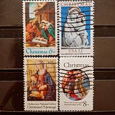 |
| www.myk.design | Christmas Nativity, Adoration of the Shepherds U.S. Postage ... | 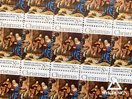 |
| littlepostagehouse.com | Christmas Madonna and Child Postage Stamps (29 Cents Each ... | 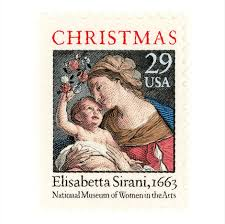 |
| www.stampcommunity.org | The Sad Demise Of Plate Block Collecting - Stamp Community Forum | 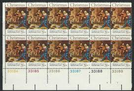 |
| www.reddit.com | These 1975 Christmas stamps don't indicate the price per ... | 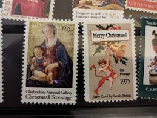 |
| heharris.com | U.S. Plate Block Stamps: 1970-1979 | H.E. Harris | 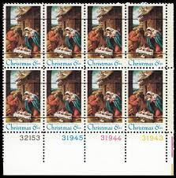 |
| www.leboncoin.fr | Timbres. États-Unis 🇺🇸. Nativité - Collection | 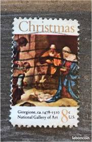 |
| commonwealthstamps.com | Niue 1981 Christmas Set Fine Used | 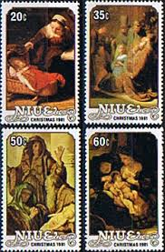 |
| www.shutterstock.com | 144+ Thousand The Adoration Of The Shepherds Royalty-Free ... | 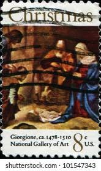 |
| www.prejeancreative.com | Fine Art for Only 49 Cents. A Brief History of the U.S. ... | 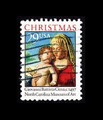 |
| about.usps.com | New Virgin and Child Forever stamp available |  |
| www.dreamstime.com | Adoration of the Shepherds by Murillo, Christmas Serie ... | 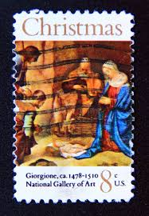 |
| www.usa-stamps.com | USA Stamps | Browse USA Stamps | Year Sets Collection | 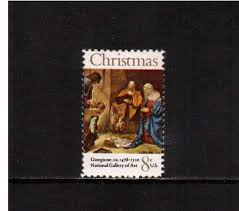 |
| www.ebay.com | STAMP US SCOTT 1444 "Christmas-Giorgione" 8 CENT 1977 MNH PB ... | 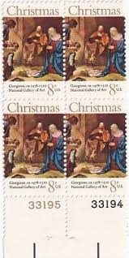 |
| www.ebid.net | US Stamp #1444 used: 1971 8c Christmas - Giorgione ... | 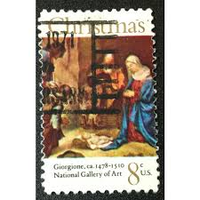 |
| www.alamy.com | Lorenzo lotto nativity hi-res stock photography and images ... | 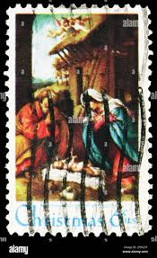 |
| vegas-stamps-hobbies.com | 1971 Christmas Nativity Single 8c Postage Stamp - Scott 1444 ... | 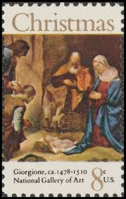 |
| www.etsy.com | Christmas Nativity | 1971 | Vintage US Postage Stamps | Face ... | 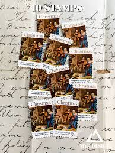 |
| www.mysticstamp.com | 2789 - 1993 29c Madonna & Child - Mystic Stamp Company | 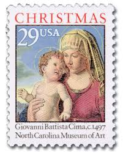 |
| auction.ru | Марка США 1971 год. Джорджоне "Поклонение пастухов ... | 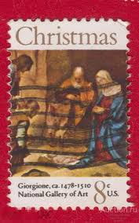 |
| www.amazon.com | The Holy Family Double-Sided Booklet of 20 ... - Amazon.com | 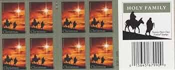 |
| www.arpinphilately.com | Buy US #1444 - Christmas Nativity (1971) 8¢ | Arpin Philately | 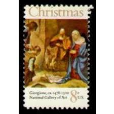 |
| littlepostagehouse.com | Christmas - Madonna Postage Stamp (22 Cents Each) — Little ... | 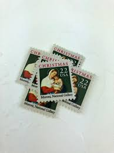 |
| telasmos.org | Sagrada Familia. Virgen de leche Rembrandt Navidad Sello ... | 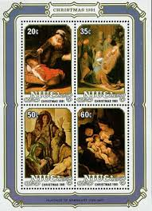 |
| www.istockphoto.com | 70+ Christmas Postage Stamp Mail Jesus Christ Stock Photos ... | 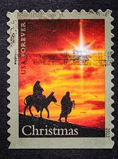 |
| www.zeboose.com | Great Britain 1967 Christmas Stamps – ZEBOOSE.COM | 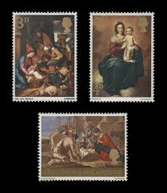 |
| esam.ir | بلوک تمبر امریکا | 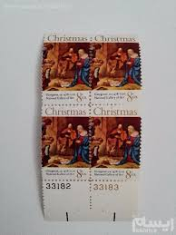 |
| ecommons.udayton.edu | Postage Stamps - Religious | Europe | University of Dayton | 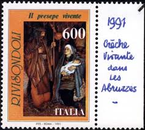 |
| www.myk.design | Christmas Madonna and Child U.S. Postage Stamps | Face Value ... | 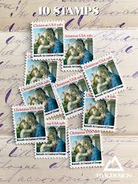 |
| en.todocoleccion.net | sello de estados unidos da america - nº 62 - li - Buy ... | 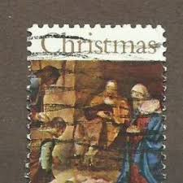 |
| edelweisspost.com | 10 Vintage Currier and Ives Christmas Stamps Unused for ... | 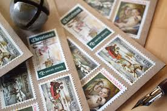 |
| www.facebook.com | Trinidad and Tobago parang music on christmas stamps | 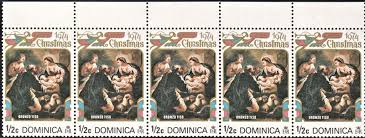 |
| www.dreamstime.com | Postage Stamp Printed in USA Shows Adoration of the ... | 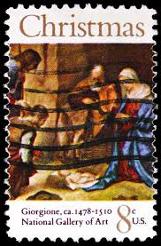 |
| www.osta.ee | Grenada 1987 Jõulumargid-tuntud kunstnike maalid ... | 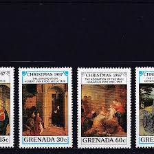 |
| www.pinterest.com | Discover 16 Rare Christmas Stamps and christmas stamps ideas ... | 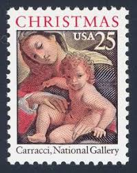 |
| store.usps.com | Christmas Madonna and Child Stamps | USPS.com | |
| postalmuseum.si.edu | Christmas Stamp First-Day Covers | National Postal Museum | |
| torob.com | خرید و قیمت بلوک تمبر باارزش کریسمس امریکا | ترب | |
| www.youtube.com | Whats with this Controversial Christmas Stamp? - YouTube | |
| www.gbstampsonline.co.uk | SG756-758 1967 Christmas Stamp Set | |
| vaticanstamps.org | Page2 View | |
| www.etsy.com | Christmas Nativity | 1970 | Vintage US Postage Stamps | Face ... | |
| en.todocoleccion.net | estados unidos nº yvert 1146/8**año 1976. navid - Buy ... | |
| www.goerie.com | In brief: Religion represented in Postal Service stamp program |